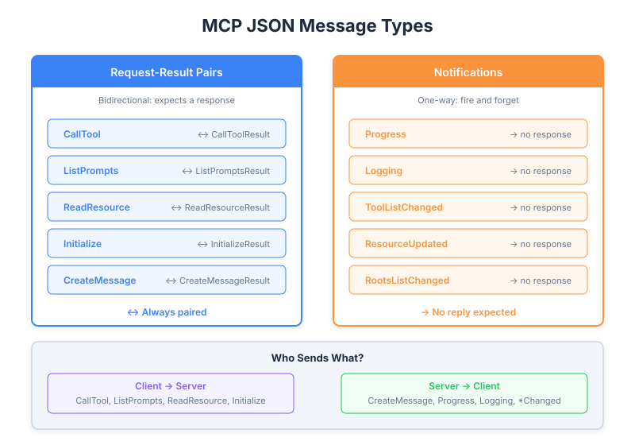

| Item | Detail |
|---|---|
| Exam Domain | D2 — Tool Design & MCP Integration (18%) |
| Task Statements | 2.4 (client-server communication patterns), 2.6 (MCP protocol specification) |
| Source | model-context-protocol-advanced-topics / 02-roots-and-messages / Lesson 10 |
All MCP communication uses JSON messages in two categories: Request-Result pairs (bidirectional, expects a response) and Notifications (one-way, fire-and-forget), forming a bidirectional protocol where both client and server can initiate communication.

Every message in MCP falls into one of two categories:
| Category | Pattern | Expects Response? | Examples |
|---|---|---|---|
| Request-Result | Sender sends request, receiver returns result | Yes | CallToolRequest/Result, ListPromptsRequest/Result |
| Notification | Sender sends, done | No | ProgressNotification, LoggingNotification |
This distinction is fundamental — it determines how you design error handling, timeouts, and message ordering.
Requests always come with a matching Result type. The sender blocks (or awaits) until the result arrives.
| Request | Result | Initiator | Purpose |
|---|---|---|---|
CallToolRequest |
CallToolResult |
Client | Execute a tool on the server |
ListPromptsRequest |
ListPromptsResult |
Client | Discover available prompts |
ReadResourceRequest |
ReadResourceResult |
Client | Read a server resource |
InitializeRequest |
InitializeResult |
Client | Establish connection, negotiate capabilities |
CreateMessageRequest |
CreateMessageResult |
Server | Sampling — ask client to call LLM |
ListRootsRequest |
ListRootsResult |
Server | Discover client's approved directories |
// Example: CallToolRequest
{
"jsonrpc": "2.0",
"id": 1,
"method": "tools/call",
"params": {
"name": "search_files",
"arguments": {
"query": "config.yaml"
}
}
}
// Example: CallToolResult
{
"jsonrpc": "2.0",
"id": 1,
"result": {
"content": [
{
"type": "text",
"text": "Found config.yaml at /project/config.yaml"
}
]
}
}
Note the id field — it correlates the request with its result (JSON-RPC 2.0 standard).
Notifications are fire-and-forget. No id field, no response expected.
| Notification | Sender | Purpose |
|---|---|---|
ProgressNotification |
Server | Report tool execution progress |
LoggingMessageNotification |
Server | Send log messages to client |
ToolListChangedNotification |
Server | Alert client that available tools changed |
ResourceUpdatedNotification |
Server | Alert client that a resource was modified |
RootsListChangedNotification |
Client | Alert server that roots were updated |
// Example: ProgressNotification (no "id" field)
{
"jsonrpc": "2.0",
"method": "notifications/progress",
"params": {
"progressToken": "task-123",
"progress": 75,
"total": 100
}
}
Key difference from requests: no id field = notification.
MCP is bidirectional — both sides can initiate communication:
Client Server
| |
|-- InitializeRequest --------->| (Client initiates)
|<-- InitializeResult ----------|
| |
|-- CallToolRequest ----------->| (Client initiates)
|<-- ProgressNotification ------| (Server pushes)
|<-- LoggingNotification -------| (Server pushes)
|<-- CallToolResult ------------|
| |
|<-- CreateMessageRequest ------| (Server initiates — sampling!)
|-- CreateMessageResult ------->|
| |
|-- RootsListChanged ---------->| (Client pushes notification)
This is different from a simple HTTP API where only the client initiates. Both sides are peers in MCP.
The MCP specification is written in TypeScript on GitHub. Important context:
// From the spec — defines the shape, not runtime code
interface CallToolRequest {
method: "tools/call";
params: {
name: string;
arguments?: Record<string, unknown>;
};
}
Understanding which side sends what:
| Client Sends (to Server) | Server Sends (to Client) |
|---|---|
InitializeRequest |
InitializeResult |
CallToolRequest |
CallToolResult |
ListPromptsRequest |
ListPromptsResult |
ReadResourceRequest |
ReadResourceResult |
RootsListChangedNotification |
ProgressNotification |
CreateMessageResult (response) |
CreateMessageRequest (sampling) |
LoggingMessageNotification |
|
ToolListChangedNotification |
Understanding message types is essential for choosing the right transport:
| Transport | Supports Bidirectional? | Supports Notifications? |
|---|---|---|
| stdio | Yes (stdin/stdout) | Yes |
| SSE | Yes (HTTP POST + SSE stream) | Yes |
| Streamable HTTP | Yes | Yes |
All MCP transports must support both directions because the protocol is inherently bidirectional.
Key Insight
MCP is not a REST API. It is a peer-to-peer protocol over a transport layer. Both client and server can send requests AND notifications. Understanding this bidirectional nature is essential for designing robust MCP integrations — you must handle incoming messages from both directions.
id, expect response) from Notifications (no id, fire-and-forget)| Front | Back |
|---|---|
| What are the two categories of MCP messages? | Request-Result pairs (bidirectional, expects response) and Notifications (one-way, fire-and-forget) |
| How do you distinguish a Request from a Notification in JSON? | Requests have an id field; Notifications do not |
| Is MCP unidirectional or bidirectional? | Bidirectional — both client and server can initiate requests and send notifications |
| What language is the MCP specification written in? | TypeScript — used for type description, not execution |
| Give an example of a server-initiated request. | CreateMessageRequest (sampling) — server asks client to call an LLM |
| What notification does a server send when its tool list changes? | ToolListChangedNotification |
| What JSON-RPC version does MCP use? | JSON-RPC 2.0 |
| Why must MCP transports support bidirectional communication? | Because both client and server can initiate requests (e.g., client calls tools, server requests sampling) |